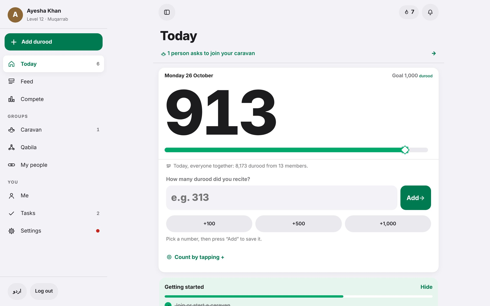

Getting started · Tutorial 1 of 13 · 2 min
Put the app on your phone
Open Seerah Quest in your browser and add it to your home screen, so it opens like any other app.
Seerah Quest is a website that works like an app. You don't need the Play Store or App Store. Once you add it to your home screen it gets its own icon, opens full screen, and even opens without internet.
On an Android phone
- Open Chrome and go to seerah-quest.fly.dev (or the link your organiser sent you on WhatsApp).
- Tap the ⋮ menu at the top right of Chrome.
- Tap Install app. On some phones it says Add to Home screen. Then tap Install.
- Find the green Seerah Quest icon on your home screen and open it from there from now on.
On an iPhone
- Open Safari and go to seerah-quest.fly.dev.
- Tap the Share button (the square with an arrow pointing up).
- Scroll down and tap Add to Home Screen, then Add.
On a computer
Just open the address in any browser. On a wide screen the menu stays open on the left side, like this:

Tip
Installing on Android also lets the app send you a gentle daily reminder. See tutorial 11.